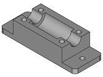
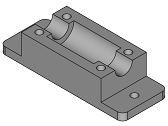

English
This repository have the parts of a mechatronic system
Index:
Folder organization
- comps: copy of the repository facd-comps of Felipe Machado.
- icons: icons of the workbench.
- parts:
- src: source code
- func: functions makes for the workbench
Stable version
The stable version is in the file Mechatronic.zip. This version run in FreeCAD 0.18
How it's works
This workbench has some parts of a mechatronic system. You can modify this parts and build your system.
Components:
Shaft holder
- Size
- Low profile: only size 8


Idle pulley holder
- Size of the profile
- Metric Nut
- Height
- Position of the end stop sensor
- Height of the end stop sensor
End stop holder
- Type
- Distance of the rail

Hall stop holder
- Width
- Thikness
- Metric nut
- Profile size
- Reinforce
Bracket
- Type: 3 options
- Size first profile
- Size second profile
- Thickness
- Metric nut first profile
- Metric nut second profile
- Number of nuts
- Distance betwen nuts
- Type of hole
- Reinforcment: first type only
- Flap: second type only
- Distance between profiles: third type only


Motor holder
- Size
- Height
- Thickness


Lin bear house
- Type


Filter holder
- Length
- Width

Tensioner
- Belt hight
- Base width
- Thickness
- Metric nut

Belt clamp
- Type
- Length
- Width
- Metric nut


Aluminium profile
- Secction
- Length

Bolts, Nuts & Washers
- Type
- Metric
- Bolt legnth


Mechatronic Systems:
Filter Stage
- Move distance
- Filter length
- Filter width
- Base width
- Tensioner stroke
- Tensioner thickness
- Metric nut
- Motor size
- Lenght rail motor holder
- Motor holder thickness

Functions:
Change to print position
Change the position of the piece to print position. Also, the user can select the folder where is save the piece.
Assembly
Select the part you like and a new place.
 
